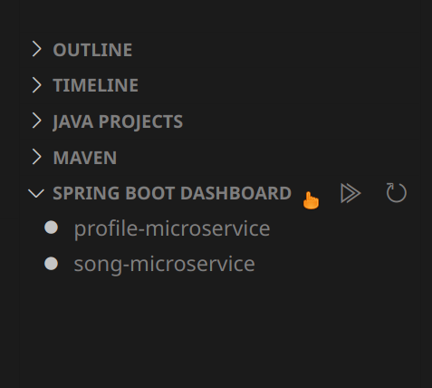

Documentation and Usage
After installing the prerequisites, load the project and Maven and Spring Boot tools should show automagically. 🚀

Press Start in the Spring Boot Dashboard and select both microservices
Note: Both the Neo4j and MongoDB databases should be running before starting both microservices.
By default, the Song Microservice runs on port 3001, and port 3002 for the Profile Microservice.
“csc301-test”"songs"27107 "neo4j" and "1234" respectively7687/getSongTitleById/{songId}Retrieves the song title given the
songId.
URL Parameters
songId is the _id of a specific song Expected Response
OK, if the title was retrieved successfully <string>, any other status if the song was not retrieved successfully Example Response
{
"status": "OK",
"data": "Never gonna give you up"
}
/deleteSongById/{songId}Deletes the song from MongoDB and all Profiles that have added it to their favorites list.
URL Parameters
songId is the _id of a specific song Expected Response
OK, if the song was deleted successfully <string>, any other status if the song was not deleted successfully /addSongAdds a song to the database.
Query Parameters
songName : the name of the songsongArtistFullName : the name of the song artistsongAlbum : the album of the song Expected Response
statusOK, if the song was deleted successfully<string>, any other status if the song was not deleted successfullydataExample Response
{
"data": {
"songName": "testDeleteSong",
"songArtistFullName": "111",
"songAlbum": "testDeleteSongArtist",
"songAmountFavourites": "0",
"id": "5d65df689a2efe318808f4cc"
},
"status": "OK"
}
/updateSongFavouritesCount/{songId}?shouldDecrement=Updates the song's favorites count.
URL Parameters
songId is the _id of a specific songQuery Parameters
shouldDecrement : string values of true or falseExpected Response
statusOK, if the song was updated successfully<string>, any other status if the song was not updated successfully/profileAdds a profile to the database and creates a liked songs playlist.
Query Parameters
userName : name of the profilefullName : full name of the Userpassword : password of the profileExpected Response
statusOK, if the profile was created successfully<string>, any other status if the profile was not created successfully/followFriend/{username}/{friendUserName}Allows a profile to follow another profile.
URL Parameters
userName : the username of the profile that will follow friendUserNamefriendUserName : the username of the profile that will be followedExpected Response
statusOK, if the the user was able to follow successfully<string>, any other status if the the user was not able to follow successfully/unfollowFriend/{username}/{friendUserName}Allows a profile to unfollow another profile.
URL Parameters
userName : the username of the profile that will unfollow friendUserNamefriendUserName : the username of the profile that will be unfollowedExpected Response
statusOK, if the the user was able to unfollow successfully<string>, any other status if the the user was not able to unfollow successfully/likeSong/{userName}/{songId}Allows a profile to like a song and add it to their liked songs playlist.
URL Parameters
userName : the username of the profile that will like the songsongId is the _id of a specific songExpected Response
statusOK, if the the user was able to like the song successfully<string>, any other status if the the user was not able to like the song successfully/unlikeSong/{userName}/{songId}Allows a profile to unlike a song and add it to their liked songs playlist.
URL Parameters
userName : the username of the profile that will unlike the songsongId is the _id of a specific songExpected Response
statusOK, if the the user was able to unlike the song successfully<string>, any other status if the the user was not able to unlike the song successfullygetAllFriendFavouriteSongTitles/{userName}Returns all the song names of the songs that the user's friends have liked.
URL Parameters
userName : the username of the profile whose friends songs we will retrievesongId is the _id of a specific songExpected Response
statusOK, if the names of songs were retrieved successfully<string>, any other status if the names of songs were not retrieved successfullydataExample Response
{
"data": {
"tahmid": [
"The Lego Movie",
"Henry IV",
"Land of Milk and Honey"
],
"shabaz": [
"Sliver",
"Off the Black",
"The Lego Movie"
]
},
"status": "OK"
}